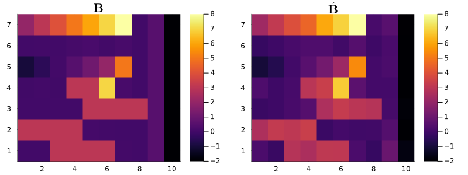
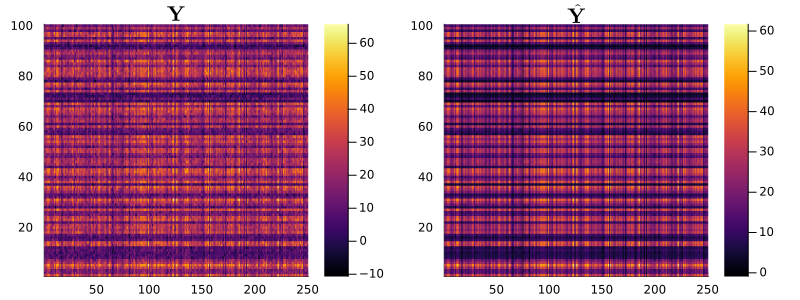
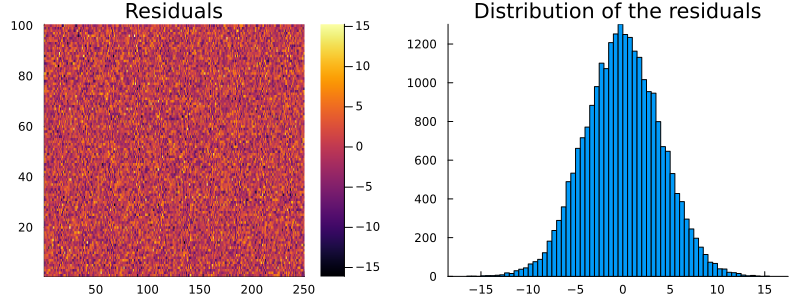
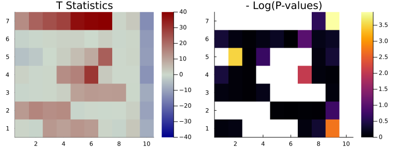

Overview
In this section, we demonstrate how to use MatrixLM.jl with a simple example using simulated data.
Matrix Linear Models (MLMs) provide a simple yet robust multivariate framework for encoding relationships and groupings in high-throughput data. MLM's flexibility allows it to encode both categorical and continuous relationships, thereby enhancing the detection of associations between responses and predictors.
Within the scope of the matrix linear model framework, the model is articulated as follows:
\[Y = XBZ^T+E\]
Where
- $Y_{n \times m}$ is the response matrix
- $X_{n \times p}$ is the matrix for main predictors,
- $Z_{m \times q}$ denotes the response attributes matrix based on supervised knowledge,
- $E_{n \times m}$ is the error term,
- $B_{p \times q}$ is the matrix for main and interaction effects.
Data Generation
For simplicity, we assume that both the responses and the predictors are presented as dataframes.
Our dataset consists of a dataframe dfX, which includes 5 predictors (but will require p=7 coefficients, as we will see later). Among these predictors, two are categorical, and three are numerical, spread across n = 100 samples. We then consider a response dataframe Y composed of m = 250 responses. To simulate the Y data, we need to generate the matrices Z,B, and E.
The matrix Z provides information about the response population, which corresponds to the Y's columns $y_{i \in [1, 250]}$. The dimensions of this matrix are set at 250x10.
Given this setup, the coefficient matrix B is designed to have dimensions of 7×10. This matches the number of columns in X (the matrix coding the 5 predictors in the data frame) with the number of information categories in Z. Finally, we construct the noise matrix E containing the error terms. We generate this matrix as a normally distributed matrix (all values from N(0,σ=4)), adding a layer of randomness to our simulation.
using MatrixLM, DataFrames, Random, Plots, StatsModels, Statistics
using StableRNGs
rng = StableRNG(2026)
# Dimensions of matrices
n = 100
m = 250
# Number of groupings designed in the Z matrix
q = 10
# Generate data with two categorical variables and 3 numerical variables.
dfX = hcat(
DataFrame(catvar1=string.(rand(rng, 0:1, n)), catvar2=rand(rng, ["A", "B", "C", "D"], n)),
DataFrame(rand(rng, n,3), ["var3", "var4", "var5"])
);
first(dfX, 5)| Row | catvar1 | catvar2 | var3 | var4 | var5 |
|---|---|---|---|---|---|
| String | String | Float64 | Float64 | Float64 | |
| 1 | 0 | A | 0.654691 | 0.84795 | 0.753778 |
| 2 | 1 | A | 0.0219391 | 0.438705 | 0.612088 |
| 3 | 0 | B | 0.771963 | 0.377601 | 0.77834 |
| 4 | 1 | D | 0.382814 | 0.0603695 | 0.597588 |
| 5 | 1 | C | 0.339513 | 0.272342 | 0.812023 |
Let's use the function design_matrix() to get the predictor model matrix based on the formula expression, including all the variable terms.
# Convert dataframe to prediction matrix
X = design_matrix(@mlmformula(catvar1 + catvar2 + var3 + var4 + var5), dfX)
p = size(X)[2]; # 5 columns in dfX, but p=7 coefs bc catvar2 has 4 levels
X[1:5, :]5×7 Matrix{Float64}:
0.0 0.0 0.0 0.0 0.654691 0.84795 0.753778
1.0 0.0 0.0 0.0 0.0219391 0.438705 0.612088
0.0 1.0 0.0 0.0 0.771963 0.377601 0.77834
1.0 0.0 0.0 1.0 0.382814 0.0603695 0.597588
1.0 0.0 1.0 0.0 0.339513 0.272342 0.812023We also have the option to specify contrast coding in our model. For a detailed understanding of how to implement contrast coding, please refer to the documentation for contrast coding with StatsModels.jl. This provides comprehensive instructions and examples.
# Convert dataframe to prediction matrix
my_ctrst = Dict(
:catvar1 => DummyCoding(base = "0"),
:catvar2 => DummyCoding(base = "A")
)
X = design_matrix(@mlmformula(catvar1 + catvar2 + var3 + var4 + var5), dfX, my_ctrst);
X[1:5, :]5×7 Matrix{Float64}:
0.0 0.0 0.0 0.0 0.654691 0.84795 0.753778
1.0 0.0 0.0 0.0 0.0219391 0.438705 0.612088
0.0 1.0 0.0 0.0 0.771963 0.377601 0.77834
1.0 0.0 0.0 1.0 0.382814 0.0603695 0.597588
1.0 0.0 1.0 0.0 0.339513 0.272342 0.812023Randomly generate some data for column covariates Z and the error matrix E:
Z = rand(rng, m,q);
E = randn(rng, n,m).*4;Next, we will structure the coefficient matrix B following a specific pattern. This approach will facilitate a more effective visualization of the results in the subsequent steps:
# (p,q)
B = [
2.0 3.0 4.0 5.0 6.0 7.0 8.0 0.0 0.5 -2.0;
0.01 0.02 0.01 0.09 0.18 0.03 0.14 0.0 0.5 -2.0;
-1.0 -0.5 0.02 0.49 1.1 2.0 5.0 0.0 0.5 -2.0;
-0.01 0.02 -0.01 3.0 3.0 7.0 0.14 0.0 0.5 -2.0;
0.0 0.0 0.0 0.0 3.0 3.0 3.0 3.0 0.5 -2.0;
3.0 3.0 3.0 3.0 0.08 0.03 0.0 0.0 0.5 -2.0;
0.01 0.0 3.0 3.0 3.0 3.0 0.04 0.0 0.5 -2.0;
];Generate the response matrix Y:
Y = X*B*Z' + E;Now, construct the RawData object consisting of the response variable Y and row/column predictors X and Z. All three matrices must be passed in as 2-dimensional arrays.
# Construct a RawData object
dat = RawData(Response(Y), Predictors(X, Z));We can use the function show() to respectively display a readable summary of the matrices and dimensions stored in a RawData object.
show(dat)RawData
Response matrix Y: 100 × 250
Design matrix X: 100 × 7
Design matrix Z: 250 × 10
X includes intercept: false
Z includes intercept: false
Preview of Y first row (first 3 columns): [14.4917, 11.2353, 16.684, …]
Preview of X first row (first 3 columns): [0.0, 0.0, 0.0, …]
Preview of Z first row (first 3 columns): [0.7882, 0.0619, 0.0065, …]Model estimation
Least-squares estimates for matrix linear models can be obtained by running mlm. An object of type Mlm will be returned, with variables for the coefficient estimates (B), the coefficient variance estimates (varB), and the estimated variance of the errors (sigma). By default, mlm estimates both row and column main effects (X and Z intercepts), but this behavior can be suppressed by setting addXIntercept=false and/or addZIntercept=false. Column weights for Y and the target type for variance shrinkage[1] can be optionally supplied to weights and targetType, respectively.
est = mlm(dat; addXIntercept=false, addZIntercept=false); # Model estimationWe can use the function show() to respectively display a readable summary of the matrices and dimensions stored in a Mlm object.
show(est)Matrix linear model fit
Observations: 100
Responses: 250
Row predictors: 7
Column predictors: 10
Coefficient matrix B: 7 × 10
Residual covariance matrix sigma(Σ): 250 × 250
Weighted fit: false
Preview of B first row (first 3 columns): [2.2743, 3.1679, 3.9293, …]
Preview of sigma(Σ) first row (first 3 columns): [18.6124, 1.7587, -0.3541, …]
Covariance shrinkage: noneModel predictions and residuals
The coefficient estimates can be accessed using coef(est). Predicted values and residuals can be obtained by calling predict() and residuals(). By default, both of these functions use the same data used to fit the model. However, a new Predictors object can be passed into predict() as the newPredictors argument, and a new RawData object can be passed into residuals() as the newData argument. For convenience, fitted(est) will return the fitted values by calling predict with the default arguments.
To compare the estimated coefficients with the original matrix B, we will visualize the matrices using heatmaps. This graphical representation allows us to readily see differences and similarities between the two.
esti_coef = coef(est); # Get the coefficients of the model
plot(
heatmap(B[end:-1:1, :],
size = (800, 300)),
heatmap(esti_coef[end:-1:1, :],
size = (800, 300),
clims = (-2, 8)),
title = ["\$ \\mathbf{B}\$" "\$ \\mathbf{\\hat{B}}\$"]
)
Let's employ the same visualization method to compare the predicted values with the original Y response matrix. This allows us to gauge the accuracy of our model predictions.
preds = predict(est); # Prediction value
plot(
heatmap(Y[end:-1:1, :],
size = (800, 300)),
heatmap(preds.Y[end:-1:1, :],
size = (800, 300),
# clims = (-2, 8)
),
title = ["\$ \\mathbf{Y}\$" "\$ \\mathbf{\\hat{Y}}\$"]
)
The residuals() function, available in MatrixLM.jl, computes residuals for each observation, helping us evaluate the discrepancy between the model's predictions and the observed data.
resids = residuals(est);
plot(
heatmap(resids[end:-1:1, :],
size = (800, 300)),
histogram(
(reshape(resids,250*100,1)),
grid = false,
label = "",
size = (800, 300)),
title = ["Residuals" "Distribution of the residuals"]
)
T-statistics and permutation test
The t-statistics for an Mlm object (defined as est.B ./ sqrt.(est.varB)) can be obtained by running t_stat. By default, t_stat does not return the corresponding t-statistics for any main effects that were estimated by mlm, but they will be returned if isMainEff=true.
tStats = t_stat(est);Permutation p-values for the t-statistics can be computed by the mlm_perms function. mlm_perms calls the more general function perm_pvals and will run the permutations in parallel when possible. The illustrative example below runs only 500 permutations; a different number can be specified as the second argument (by modifying the nPerms value). By default, the function used to permute Y is shuffle_rows, which shuffles the rows for Y. Alternative functions for permuting Y, such as shuffle_cols, can be passed into the argument permFun. mlm_perms calls mlm and t_stat, so the user is free to specify keyword arguments for mlm or t_stat; by default, mlm_perms will call both functions using their default behavior.
nPerms = 500
tStats, pVals = mlm_perms(dat, nPerms, addXIntercept=false, addZIntercept=false);
plot(
heatmap(tStats[end:-1:1, :],
c = :bluesreds,
clims = (-40, 40),
size = (800, 300)),
heatmap(-log.(pVals[end:-1:1, :]),
grid = false,
size = (800, 300)),
title = ["T Statistics" "- Log(P-values)"]
)
White cells represent p-values of 0, not missing. These p-values should be reported as < 1/500 when using 500 permutations here, and more permutations would give more precision about how small these p-values are.
julia> pVals7×10 Matrix{Float64}: 0.0 0.0 0.0 0.0 0.0 0.0 0.0 0.55 0.02 0.0 0.69 0.896 0.972 0.876 0.788 1.0 0.372 0.854 0.788 0.0 0.0 0.03 0.996 0.498 0.0 0.0 0.0 0.898 0.694 0.0 0.666 0.938 0.98 0.0 0.0 0.0 0.13 0.92 0.954 0.0 0.9 0.936 0.986 0.848 0.0 0.0 0.0 0.0 0.916 0.0 0.0 0.0 0.0 0.0 0.97 0.994 0.968 0.98 0.476 0.0 0.922 0.884 0.0 0.0 0.0 0.0 0.906 0.712 0.066 0.0
Summary
Call the summary on a fitted MatrixLM object to inspect the estimates, standard errors, confidence intervals (CIs), and the associated row and column labels.
The method returns a dataframe with one row per coefficient and the following columns:
row_term,col_term: index labels for the row-side (X) and column-side (Z) associated with each coefficient entry (column-major order).coef: coefficient estimate for each X–Z pair.std_error,t_stat,p_value: respectively, standard error, T-statistics, and p-values for testing.ci_lower,ci_upper: two-sided confidence interval bounds at the specified significance level.
The summary method has three keyword arguments:
alpha: two-sided significance level for CIs and margins of error (default 0.05, 95% CI).permutation_test: when true, compute permutation-based t-stats/p-values; when false, use t-distribution.nPerms: number of permutations to run when permutation_test is true.
This summary table can be used to identify which row/column covariate combinations are significant and to estimate their effect sizes along with their uncertainty.
MatrixLM.summary(est, alpha = 0.05, permutation_test = false)| Row | row_term | col_term | coef | std_error | t_stat | p_value | ci_lower | ci_upper |
|---|---|---|---|---|---|---|---|---|
| String | String | Float64 | Float64 | Float64 | Float64 | Float64 | Float64 | |
| 1 | row_1 | col_1 | 2.2743 | 0.160273 | 14.1901 | 1.34407e-25 | 1.96017 | 2.58843 |
| 2 | row_2 | col_1 | -0.268223 | 0.210208 | -1.27599 | 0.204945 | -0.680222 | 0.143777 |
| 3 | row_3 | col_1 | -1.02531 | 0.231353 | -4.4318 | 2.41766e-5 | -1.47875 | -0.571867 |
| 4 | row_4 | col_1 | 0.287563 | 0.206476 | 1.39272 | 0.166825 | -0.117122 | 0.692247 |
| 5 | row_5 | col_1 | -0.180121 | 0.253377 | -0.710883 | 0.478828 | -0.676731 | 0.316488 |
| 6 | row_6 | col_1 | 2.65163 | 0.22848 | 11.6055 | 3.59752e-20 | 2.20382 | 3.09945 |
| 7 | row_7 | col_1 | 0.214828 | 0.243617 | 0.881825 | 0.380008 | -0.262653 | 0.692309 |
| 8 | row_1 | col_2 | 3.16786 | 0.145059 | 21.8383 | 1.22845e-39 | 2.88355 | 3.45217 |
| 9 | row_2 | col_2 | -0.0951813 | 0.190254 | -0.500285 | 0.617984 | -0.468072 | 0.27771 |
| 10 | row_3 | col_2 | -0.664364 | 0.209392 | -3.17283 | 0.00201114 | -1.07477 | -0.253964 |
| 11 | row_4 | col_2 | -0.0827378 | 0.186876 | -0.442741 | 0.658919 | -0.449009 | 0.283533 |
| 12 | row_5 | col_2 | -0.0971889 | 0.229325 | -0.423804 | 0.672628 | -0.546659 | 0.352281 |
| 13 | row_6 | col_2 | 3.19898 | 0.206792 | 15.4695 | 3.62713e-28 | 2.79367 | 3.60428 |
| 14 | row_7 | col_2 | -0.213465 | 0.220492 | -0.96813 | 0.335338 | -0.645622 | 0.218692 |
| 15 | row_1 | col_3 | 3.92934 | 0.155357 | 25.2923 | 5.34961e-45 | 3.62485 | 4.23384 |
| 16 | row_2 | col_3 | 0.140847 | 0.20376 | 0.691241 | 0.491032 | -0.258515 | 0.54021 |
| 17 | row_3 | col_3 | -0.00746434 | 0.224257 | -0.0332848 | 0.973514 | -0.446999 | 0.432071 |
| 18 | row_4 | col_3 | 0.114124 | 0.200143 | 0.570213 | 0.569825 | -0.278149 | 0.506396 |
| 19 | row_5 | col_3 | 0.13518 | 0.245605 | 0.550394 | 0.583289 | -0.346198 | 0.616557 |
| 20 | row_6 | col_3 | 3.05624 | 0.221472 | 13.7996 | 8.49696e-25 | 2.62216 | 3.49032 |
| 21 | row_7 | col_3 | 2.84129 | 0.236145 | 12.032 | 4.38372e-21 | 2.37846 | 3.30413 |
| 22 | row_1 | col_4 | 4.56745 | 0.163788 | 27.8863 | 1.10319e-48 | 4.24643 | 4.88847 |
| 23 | row_2 | col_4 | 0.308017 | 0.214818 | 1.43385 | 0.154766 | -0.113018 | 0.729053 |
| 24 | row_3 | col_4 | 0.522699 | 0.236427 | 2.21083 | 0.0293495 | 0.0593111 | 0.986088 |
| 25 | row_4 | col_4 | 2.9454 | 0.211004 | 13.959 | 3.99576e-25 | 2.53184 | 3.35896 |
| 26 | row_5 | col_4 | 0.448485 | 0.258934 | 1.73204 | 0.0863804 | -0.0590163 | 0.955986 |
| 27 | row_6 | col_4 | 3.36913 | 0.233491 | 14.4293 | 4.382e-26 | 2.91149 | 3.82676 |
| 28 | row_7 | col_4 | 2.59215 | 0.24896 | 10.4119 | 1.38418e-17 | 2.1042 | 3.0801 |
| 29 | row_1 | col_5 | 6.07064 | 0.161974 | 37.4792 | 2.70459e-60 | 5.75318 | 6.38811 |
| 30 | row_2 | col_5 | 0.304928 | 0.212438 | 1.43537 | 0.154333 | -0.111443 | 0.721299 |
| 31 | row_3 | col_5 | 1.19427 | 0.233808 | 5.10792 | 1.58355e-6 | 0.736017 | 1.65253 |
| 32 | row_4 | col_5 | 3.37376 | 0.208667 | 16.1682 | 1.56171e-29 | 2.96478 | 3.78274 |
| 33 | row_5 | col_5 | 2.63785 | 0.256065 | 10.3015 | 2.40835e-17 | 2.13597 | 3.13973 |
| 34 | row_6 | col_5 | -0.17299 | 0.230905 | -0.749185 | 0.455522 | -0.625555 | 0.279574 |
| 35 | row_7 | col_5 | 3.09751 | 0.246202 | 12.5812 | 2.97991e-22 | 2.61497 | 3.58006 |
| 36 | row_1 | col_6 | 6.90816 | 0.176282 | 39.188 | 4.31587e-62 | 6.56265 | 7.25367 |
| 37 | row_2 | col_6 | -0.00814953 | 0.231205 | -0.0352481 | 0.971953 | -0.461303 | 0.445004 |
| 38 | row_3 | col_6 | 2.20157 | 0.254462 | 8.65185 | 9.44562e-14 | 1.70283 | 2.70031 |
| 39 | row_4 | col_6 | 6.79623 | 0.2271 | 29.9261 | 2.11965e-51 | 6.35112 | 7.24133 |
| 40 | row_5 | col_6 | 3.2402 | 0.278686 | 11.6267 | 3.23949e-20 | 2.69398 | 3.78641 |
| 41 | row_6 | col_6 | 0.0610615 | 0.251303 | 0.24298 | 0.808524 | -0.431483 | 0.553606 |
| 42 | row_7 | col_6 | 3.07183 | 0.267952 | 11.4641 | 7.25191e-20 | 2.54665 | 3.597 |
| 43 | row_1 | col_7 | 7.9901 | 0.167816 | 47.6122 | 4.81962e-70 | 7.66119 | 8.31901 |
| 44 | row_2 | col_7 | 0.451547 | 0.220101 | 2.05155 | 0.0428544 | 0.0201571 | 0.882937 |
| 45 | row_3 | col_7 | 5.4263 | 0.242241 | 22.4004 | 1.50967e-40 | 4.95152 | 5.90108 |
| 46 | row_4 | col_7 | 0.612793 | 0.216193 | 2.83447 | 0.00556455 | 0.189062 | 1.03652 |
| 47 | row_5 | col_7 | 2.97552 | 0.265302 | 11.2156 | 2.49314e-19 | 2.45554 | 3.4955 |
| 48 | row_6 | col_7 | -0.0532536 | 0.239234 | -0.222601 | 0.824305 | -0.522143 | 0.415636 |
| 49 | row_7 | col_7 | 0.207178 | 0.255083 | 0.812198 | 0.418626 | -0.292775 | 0.707131 |
| 50 | row_1 | col_8 | 0.138701 | 0.158675 | 0.874123 | 0.384167 | -0.172296 | 0.449699 |
| 51 | row_2 | col_8 | -0.0886324 | 0.208112 | -0.425889 | 0.671113 | -0.496524 | 0.319259 |
| 52 | row_3 | col_8 | 0.0596474 | 0.229046 | 0.260417 | 0.795083 | -0.389274 | 0.508569 |
| 53 | row_4 | col_8 | 0.0508029 | 0.204417 | 0.248526 | 0.804242 | -0.349847 | 0.451453 |
| 54 | row_5 | col_8 | 2.85731 | 0.25085 | 11.3905 | 1.04504e-19 | 2.36565 | 3.34897 |
| 55 | row_6 | col_8 | -0.0148526 | 0.226202 | -0.0656609 | 0.94778 | -0.458201 | 0.428495 |
| 56 | row_7 | col_8 | -0.274185 | 0.241188 | -1.13681 | 0.258363 | -0.746905 | 0.198536 |
| 57 | row_1 | col_9 | 0.540539 | 0.178151 | 3.03416 | 0.00308094 | 0.19137 | 0.889708 |
| 58 | row_2 | col_9 | 0.181192 | 0.233655 | 0.775469 | 0.439911 | -0.276764 | 0.639149 |
| 59 | row_3 | col_9 | 0.227957 | 0.257159 | 0.886442 | 0.377527 | -0.276066 | 0.731979 |
| 60 | row_4 | col_9 | 0.0579444 | 0.229507 | 0.252473 | 0.801199 | -0.391881 | 0.50777 |
| 61 | row_5 | col_9 | 0.0942441 | 0.28164 | 0.334626 | 0.738615 | -0.45776 | 0.646248 |
| 62 | row_6 | col_9 | 0.443801 | 0.253966 | 1.74748 | 0.0836545 | -0.0539633 | 0.941566 |
| 63 | row_7 | col_9 | 0.946106 | 0.270792 | 3.49385 | 0.000713537 | 0.415364 | 1.47685 |
| 64 | row_1 | col_10 | -1.9713 | 0.140361 | -14.0445 | 2.66784e-25 | -2.2464 | -1.6962 |
| 65 | row_2 | col_10 | -2.11871 | 0.184091 | -11.509 | 5.80325e-20 | -2.47952 | -1.7579 |
| 66 | row_3 | col_10 | -2.23688 | 0.202609 | -11.0404 | 5.9702e-19 | -2.63398 | -1.83977 |
| 67 | row_4 | col_10 | -2.34155 | 0.180823 | -12.9494 | 4.98966e-23 | -2.69596 | -1.98715 |
| 68 | row_5 | col_10 | -1.87376 | 0.221897 | -8.44427 | 2.65697e-13 | -2.30867 | -1.43885 |
| 69 | row_6 | col_10 | -2.00583 | 0.200094 | -10.0245 | 9.67541e-17 | -2.39801 | -1.61365 |
| 70 | row_7 | col_10 | -1.73058 | 0.21335 | -8.11147 | 1.38433e-12 | -2.14874 | -1.31242 |
References
- 1Ledoit, O., & Wolf, M. (2003). Improved estimation of the covariance matrix of stock returns with an application to portfolio selection. Journal of empirical finance, 10(5), 603-621.